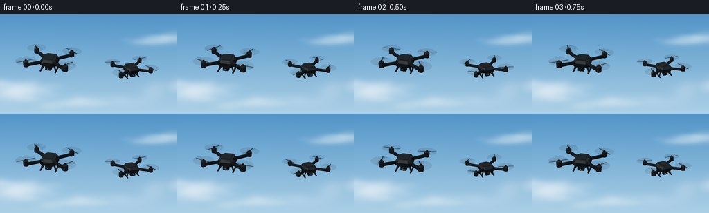
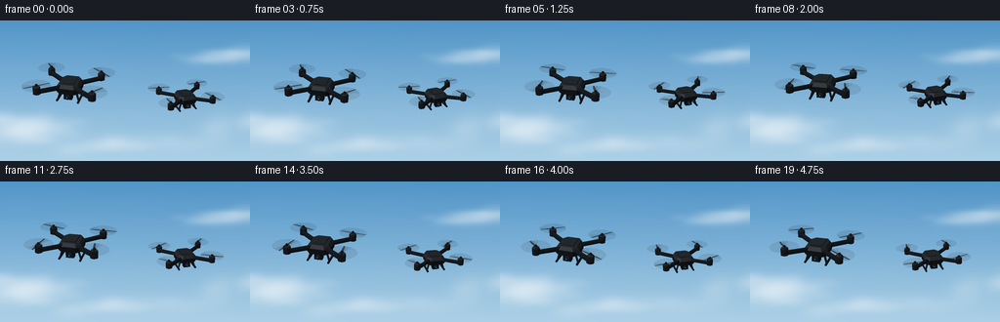

CODING AGENTS AS PIXEL WORLD MODELS
traex/GPT-6.1-Sol · instance_preservation_0042
点击播放 · 原生 RGB 像素
逐轮保存的候选
回放视频、检查图与代码变化。
每份候选均可单独播放。实际图片检查记录在下方工具轨迹中。
候选 01播放与检查图
点击播放 · 原生 RGB 像素


展开代码变化
--- 上一保存版本
+++ 本次保存版本
@@ -0,0 +1,163 @@
+from pathlib import Path
+import json, math
+import numpy as np
+from PIL import Image, ImageDraw, ImageFilter
+from artifact_io import save
+
+ROOT=Path(__file__).resolve().parent
+SPEC=json.loads((ROOT/'task_spec.json').read_text())
+W,H=SPEC['width'],SPEC['height']
+SS=4
+SW,SH=W*SS,H*SS
+rng=np.random.default_rng(710)
+
+# An airy, softly lit sky. Clouds are made from layered smooth mathematical fields.
+y,x=np.mgrid[0:SH,0:SW].astype(float); x/=SS; y/=SS
+clouds=np.zeros((SH,SW))
+for cx,cy,sx,sy,amp in [(10,107,52,13,.73),(36,115,43,12,.9),(110,128,56,10,.6),(240,33,34,8,.65),(219,38,36,7,.48),(256,105,32,13,.5)]:
+ for k in range(18):
+ xx=cx+rng.normal(0,sx*.6); yy=cy+rng.normal(0,sy*.35)
+ rx=rng.uniform(sx*.18,sx*.55); ry=rng.uniform(sy*.35,sy*.85)
+ clouds+=amp/5*np.exp(-((x-xx)/rx)**2-((y-yy)/ry)**2)
+clouds=1-np.exp(-clouds)
+t=y/H
+sky=np.empty((SH,SW,3))
+for c, (top,bottom) in enumerate([(81,172),(148,208),(199,230)]):
+ sky[:,:,c]=top*(1-t)+bottom*t
+ sky[:,:,c]=sky[:,:,c]*(1-clouds*.75)+np.array([245,248,250])[c]*clouds*.75
+sky += 1.6*np.exp(-((x-20)/150)**2-((y-20)/100)**2)[:,:,None]
+sky=Image.fromarray(np.uint8(np.clip(sky,0,255))).filter(ImageFilter.GaussianBlur(.7*SS))
+
+# All geometry is modelled here: airframes, arms, motors, landing legs and cameras.
+faces=[]
+def polygon(pts,color=(20,24,28),material='matte',alpha=255):
+ faces.append((np.array(pts,dtype=float),color,material,alpha))
+
+def box(center,size,color=(20,24,28)):
+ cx,cy,cz=center; a,b,c=np.array(size)/2
+ verts=np.array([[cx+xx*a,cy+yy*b,cz+zz*c] for xx,yy,zz in [(-1,-1,-1),(1,-1,-1),(1,1,-1),(-1,1,-1),(-1,-1,1),(1,-1,1),(1,1,1),(-1,1,1)]])
+ for ids in [(0,3,2,1),(4,5,6,7),(0,1,5,4),(1,2,6,5),(2,3,7,6),(3,0,4,7)]:
+ polygon(verts[list(ids)],color)
+
+def cylinder(a,b,r,color=(21,25,29),n=16,r2=None,material='matte'):
+ a=np.array(a,float); b=np.array(b,float); axis=b-a; axis/=np.linalg.norm(axis)
+ ref=np.array([0.,0.,1.]) if abs(axis[2])<.85 else np.array([1.,0.,0.])
+ u=np.cross(axis,ref); u/=np.linalg.norm(u); v=np.cross(axis,u)
+ theta=np.arange(n)*2*np.pi/n
+ ring=np.cos(theta)[:,None]*u+np.sin(theta)[:,None]*v
+ p=a+ring*r; q=b+ring*(r if r2 is None else r2)
+ polygon(p[::-1],color,material); polygon(q,color,material)
+ for k in range(n):
+ j=(k+1)%n; polygon([p[k],p[j],q[j],q[k]],color,material)
+
+def bevel_body():
+ outline=np.array([[-5,-10],[5,-10],[8,-6.7],[8,5.5],[5.2,10],[-5.2,10],[-8,5.5],[-8,-6.7]])
+ low=np.c_[outline,np.full(8,-2.)]
+ mid=np.c_[outline,np.full(8,1.7)]
+ top=np.c_[outline*.81,np.full(8,4.)]
+ polygon(low[::-1],(13,16,19))
+ polygon(top,(26,30,33))
+ for k in range(8):
+ j=(k+1)%8
+ polygon([low[k],low[j],mid[j],mid[k]],(17,20,23))
+ polygon([mid[k],mid[j],top[j],top[k]],(29,32,36))
+ # Top battery housing and fine panel breaks.
+ box((0,.5,4.05),(7.9,12,.45),(21,24,27))
+ box((0,5,4.35),(6.8,.25,.12),(49,53,56))
+ for xx in [-2.6,-1.3,0,1.3,2.6]:
+ box((xx,2.4,4.32),(.38,3.0,.1),(10,12,14))
+
+
+def make_drone(t,index):
+ global faces
+ faces=[]
+ bevel_body()
+ for sx in [-1,1]:
+ for sy in [-1,1]:
+ anchor=np.array([sx*6,sy*5.5,0.4]); tip=np.array([sx*18.7,sy*16.5,.8])
+ # Broad structural arms and narrow upper reinforcement strips.
+ cylinder(anchor,tip,1.65,(17,20,23),8)
+ cylinder(anchor+[0,0,1.25],tip+[0,0,1.0],.47,(37,41,45),8)
+ cylinder(tip-[0,0,1.3],tip+[0,0,3.3],2.5,(20,23,27),20)
+ cylinder(tip+[0,0,3.3],tip+[0,0,4.05],2.0,(36,40,43),20)
+ cylinder(tip+[0,0,4.05],tip+[0,0,5.4],.72,(13,16,18),12)
+ # Tiny front/rear status LEDs, not extra objects.
+ box(tip+[0,-2.25,.3],(1.2,.34,.7),(33,159,158) if sy==-1 else (174,35,28))
+ center=tip+[0,0,4.45]; radius=9.8
+ # Translucent rotor sweep, with individual spinning blades visible through it.
+ steps=48
+ for k in range(steps):
+ a=k*2*np.pi/steps; b=(k+1)*2*np.pi/steps
+ p=lambda rad,ang: center+np.array([rad*np.cos(ang),rad*np.sin(ang),0])
+ polygon([p(1.3,a),p(radius,a),p(radius,b),p(1.3,b)],(24,31,38),'unlit',24)
+ angle=t*33.4+sx*1.7+sy*.7+index*.9
+ for trail,opacity in [(0,165),(-.25,40),(-.52,24)]:
+ for flip in [0,math.pi]:
+ a=angle+flip+trail
+ u=np.array([np.cos(a),np.sin(a),0]); v=np.array([-np.sin(a),np.cos(a),0])
+ polygon([center+u*.8-v*.37,center+u*8.9-v*.8,center+u*9.7+v*.17,center+u*4+v*.75,center+u*.8+v*.38],(14,17,20),'unlit',opacity)
+ cylinder(center+[0,0,.08],center+[0,0,.62],.9,(27,30,34),12)
+ # Underbody suspended gimbal, a front-facing optical lens.
+ cylinder((0,-4,-1.8),(0,-4,-5.5),.9,(28,31,35),12)
+ box((0,-5,-5.5),(5.5,4.1,3.8),(13,16,19))
+ cylinder((0,-7.1,-5.5),(0,-7.8,-5.5),1.65,(36,40,44),24)
+ cylinder((0,-7.8,-5.5),(0,-8.1,-5.5),1.25,(5,10,16),24)
+ cylinder((0,-8.11,-5.5),(0,-8.13,-5.5),.87,(13,35,49),20,material='lens')
+ cylinder((-.25,-8.15,-5.2),(-.25,-8.17,-5.2),.25,(116,160,180),12,material='unlit')
+ # Two short landing skids, well separated below the body.
+ for sx in [-1,1]:
+ for yy in [-5.2,5.4]:
+ cylinder((sx*5.4,yy,-1.5),(sx*7.4,yy,-8.4),.64,(23,26,29),10)
+ cylinder((sx*7.4,-8,-8.4),(sx*7.4,8,-8.4),.69,(17,20,23),12)
+ return faces
+
+light=np.array([-.45,-.35,.82]); light/=np.linalg.norm(light)
+# An elevated three-quarter camera shows all four rotors and the suspended lens.
+view=np.array([0,-.91,.415]); view/=np.linalg.norm(view)
+right=np.array([1.,0.,0.]); up=np.cross(view,right)
+
+def render_drone(canvas,t,index):
+ geometry=make_drone(t,index)
+ if index==0:
+ cx=72+2.6*np.sin(t*.8); cy=66+2.1*np.sin(t*1.65+.4); scale=1.48
+ yaw=-.26+.045*np.sin(t*1.1)
+ else:
+ cx=188+2.1*np.sin(t*.7+.7); cy=77+2*np.sin(t*1.45+2); scale=1.17
+ yaw=.33+.055*np.sin(t*.85+1)
+ roll=.017*np.sin(t*1.9+index*2)
+ pitch=.014*np.cos(t*1.6+index)
+ Rz=np.array([[np.cos(yaw),-np.sin(yaw),0],[np.sin(yaw),np.cos(yaw),0],[0,0,1]])
+ Rx=np.array([[1,0,0],[0,np.cos(pitch),-np.sin(pitch)],[0,np.sin(pitch),np.cos(pitch)]])
+ Ry=np.array([[np.cos(roll),0,np.sin(roll)],[0,1,0],[-np.sin(roll),0,np.cos(roll)]])
+ R=Rz@Rx@Ry
+ drawables=[]
+ for pts,color,mat,alpha in geometry:
+ pp=pts@R.T
+ norm=np.cross(pp[1]-pp[0],pp[2]-pp[0]); norm/=max(np.linalg.norm(norm),1e-8)
+ if np.dot(norm,view)<0 and alpha==255: continue
+ depth=pp@view
+ perspective=1+depth/240
+ q=np.stack([cx+scale*(pp@right)*perspective,cy-scale*(pp@up)*perspective],axis=1)*SS
+ base=np.array(color,float)
+ if mat not in ['unlit','lens']:
+ diffuse=max(0,np.dot(norm,light))
+ halfway=(light+view); halfway/=np.linalg.norm(halfway)
+ spec=max(0,np.dot(norm,halfway))**22
+ base=base*(.62+diffuse*.83)+spec*19
+ drawables.append((np.mean(depth),q,tuple(np.uint8(np.clip(base,0,255)))+(alpha,)))
+ drawables.sort(key=lambda item:item[0])
+ # Sort visible surfaces far to near; alpha compositing preserves rotor motion blur.
+ draw=ImageDraw.Draw(canvas,'RGBA')
+ for _,q,col in drawables:
+ draw.polygon([tuple(p) for p in q],fill=col)
+
+frames=[]
+for i in range(SPEC['frames']):
+ t=i/SPEC['fps']
+ im=sky.copy()
+ render_drone(im,t,1)
+ render_drone(im,t,0)
+ im=im.resize((W,H),Image.Resampling.LANCZOS)
+ frames.append(np.asarray(im,dtype=np.uint8))
+save(np.stack(frames),ROOT)
+print('Saved',len(frames),'RGB frames at',W,'x',H)
可观测工具轨迹
实际执行的命令与返回图片。
命令 1exit 0
/bin/bash -lc 'ls -la && cat prompt.txt && cat GENERATION_RULES.md && cat task_spec.json'
命令 2exit 0
/bin/bash -lc 'cat artifact_io.py && cat player_template.html | head -35'
命令 3exit 0
/bin/bash -lc "cat > generate.py <<'PY'
from pathlib import Path
import json, math
import numpy as np
from PIL import Image, ImageDraw, ImageFilter
from artifact_io import save
ROOT=Path(__file__).resolve().parent
SPEC=json.loads((ROOT/'task_spec.json').read_text())
W,H=SPEC['width'],SPEC['height']
SS=4
SW,SH=W*SS,H*SS
rng=np.random.default_rng(710)
# An airy, softly lit sky. Clouds are made from layered smooth mathematical fields.
y,x=np.mgrid[0:SH,0:SW].astype(float); x/=SS; y/=SS
clouds=np.zeros((SH,SW))
for cx,cy,sx,sy,amp in [(10,107,52,13,.73),(36,115,43,12,.9),(110,128,56,10,.6),(240,33,34,8,.65),(219,38,36,7,.48),(256,105,32,13,.5)]:
for k in range(18):
xx=cx+rng.normal(0,sx*.6); yy=cy+rng.normal(0,sy*.35)
rx=rng.uniform(sx*.18,sx*.55); ry=rng.uniform(sy*.35,sy*.85)
clouds+=amp/5*np.exp(-((x-xx)/rx)**2-((y-yy)/ry)**2)
clouds=1-np.exp(-clouds)
t=y/H
sky=np.empty((SH,SW,3))
for c, (top,bottom) in enumerate([(81,172),(148,208),(199,230)]):
sky[:,:,c]=top*(1-t)+bottom*t
sky[:,:,c]=sky[:,:,c]*(1-clouds*.75)+np.array([245,248,250])[c]*clouds*.75
sky += 1.6*np.exp(-((x-20)/150)**2-((y-20)/100)**2)[:,:,None]
sky=Image.fromarray(np.uint8(np.clip(sky,0,255))).filter(ImageFilter.GaussianBlur(.7*SS))
# All geometry is modelled here: airframes, arms, motors, landing legs and cameras.
faces=[]
def polygon(pts,color=(20,24,28),material='matte',alpha=255):
faces.append((np.array(pts,dtype=float),color,material,alpha))
def box(center,size,color=(20,24,28)):
cx,cy,cz=center; a,b,c=np.array(size)/2
verts=np.array([[cx+xx*a,cy+yy*b,cz+zz*c] for xx,yy,zz in [(-1,-1,-1),(1,-1,-1),(1,1,-1),(-1,1,-1),(-1,-1,1),(1,-1,1),(1,1,1),(-1,1,1)]])
for ids in [(0,3,2,1),(4,5,6,7),(0,1,5,4),(1,2,6,5),(2,3,7,6),(3,0,4,7)]:
polygon(verts[list(ids)],color)
def cylinder(a,b,r,color=(21,25,29),n=16,r2=None,material='matte'):
a=np.array(a,float); b=np.array(b,float); axis=b-a; axis/=np.linalg.norm(axis)
ref=np.array([0.,0.,1.]) if abs(axis[2])<.85 else np.array([1.,0.,0.])
u=np.cross(axis,ref); u/=np.linalg.norm(u); v=np.cross(axis,u)
theta=np.arange(n)*2*np.pi/n
ring=np.cos(theta)[:,None]*u+np.sin(theta)[:,None]*v
p=a+ring*r; q=b+ring*(r if r2 is None else r2)
polygon(p[::-1],color,material); polygon(q,color,material)
for k in range(n):
j=(k+1)%n; polygon([p[k],p[j],q[j],q[k]],color,material)
def bevel_body():
outline=np.array([[-5,-10],[5,-10],[8,-6.7],[8,5.5],[5.2,10],[-5.2,10],[-8,5.5],[-8,-6.7]])
low=np.c_[outline,np.full(8,-2.)]
mid=np.c_[outline,np.full(8,1.7)]
top=np.c_[outline*.81,np.full(8,4.)]
polygon(low[::-1],(13,16,19))
polygon(top,(26,30,33))
for k in range(8):
j=(k+1)%8
polygon([low[k],low[j],mid[j],mid[k]],(17,20,23))
polygon([mid[k],mid[j],top[j],top[k]],(29,32,36))
# Top battery housing and fine panel breaks.
box((0,.5,4.05),(7.9,12,.45),(21,24,27))
box((0,5,4.35),(6.8,.25,.12),(49,53,56))
for xx in [-2.6,-1.3,0,1.3,2.6]:
box((xx,2.4,4.32),(.38,3.0,.1),(10,12,14))
def make_drone(t,index):
global faces
faces=[]
bevel_body()
for sx in [-1,1]:
for sy in [-1,1]:
anchor=np.array([sx*6,sy*5.5,0.4]); tip=np.array([sx*18.7,sy*16.5,.8])
# Broad structural arms and narrow upper reinforcement strips.
cylinder(anchor,tip,1.65,(17,20,23),8)
cylinder(anchor+[0,0,1.25],tip+[0,0,1.0],.47,(37,41,45),8)
cylinder(tip-[0,0,1.3],tip+[0,0,3.3],2.5,(20,23,27),20)
cylinder(tip+[0,0,3.3],tip+[0,0,4.05],2.0,(36,40,43),20)
cylinder(tip+[0,0,4.05],tip+[0,0,5.4],.72,(13,16,18),12)
# Tiny front/rear status LEDs, not extra objects.
box(tip+[0,-2.25,.3],(1.2,.34,.7),(33,159,158) if sy==-1 else (174,35,28))
center=tip+[0,0,4.45]; radius=9.8
# Translucent rotor sweep, with individual spinning blades visible through it.
steps=48
for k in range(steps):
a=k*2*np.pi/steps; b=(k+1)*2*np.pi/steps
p=lambda rad,ang: center+np.array([rad*np.cos(ang),rad*np.sin(ang),0])
polygon([p(1.3,a),p(radius,a),p(radius,b),p(1.3,b)],(24,31,38),'unlit',24)
angle=t*33.4+sx*1.7+sy*.7+index*.9
for trail,opacity in [(0,165),(-.25,40),(-.52,24)]:
for flip in [0,math.pi]:
a=angle+flip+trail
u=np.array([np.cos(a),np.sin(a),0]); v=np.array([-np.sin(a),np.cos(a),0])
polygon([center+u*.8-v*.37,center+u*8.9-v*.8,center+u*9.7+v*.17,center+u*4+v*.75,center+u*.8+v*.38],(14,17,20),'unlit',opacity)
cylinder(center+[0,0,.08],center+[0,0,.62],.9,(27,30,34),12)
# Underbody suspended gimbal, a front-facing optical lens.
cylinder((0,-4,-1.8),(0,-4,-5.5),.9,(28,31,35),12)
box((0,-5,-5.5),(5.5,4.1,3.8),(13,16,19))
cylinder((0,-7.1,-5.5),(0,-7.8,-5.5),1.65,(36,40,44),24)
cylinder((0,-7.8,-5.5),(0,-8.1,-5.5),1.25,(5,10,16),24)
cylinder((0,-8.11,-5.5),(0,-8.13,-5.5),.87,(13,35,49),20,material='lens')
cylinder((-.25,-8.15,-5.2),(-.25,-8.17,-5.2),.25,(116,160,180),12,material='unlit')
# Two short landing skids, well separated below the body.
for sx in [-1,1]:
for yy in [-5.2,5.4]:
cylinder((sx*5.4,yy,-1.5),(sx*7.4,yy,-8.4),.64,(23,26,29),10)
cylinder((sx*7.4,-8,-8.4),(sx*7.4,8,-8.4),.69,(17,20,23),12)
return faces
light=np.array([-.45,-.35,.82]); light/=np.linalg.norm(light)
# An elevated three-quarter camera shows all four rotors and the suspended lens.
view=np.array([0,-.91,.415]); view/=np.linalg.norm(view)
right=np.array([1.,0.,0.]); up=np.cross(view,right)
def render_drone(canvas,t,index):
geometry=make_drone(t,index)
if index==0:
cx=72+2.6*np.sin(t*.8); cy=66+2.1*np.sin(t*1.65+.4); scale=1.48
yaw=-.26+.045*np.sin(t*1.1)
else:
cx=188+2.1*np.sin(t*.7+.7); cy=77+2*np.sin(t*1.45+2); scale=1.17
yaw=.33+.055*np.sin(t*.85+1)
roll=.017*np.sin(t*1.9+index*2)
pitch=.014*np.cos(t*1.6+index)
Rz=np.array([[np.cos(yaw),-np.sin(yaw),0],[np.sin(yaw),np.cos(yaw),0],[0,0,1]])
Rx=np.array([[1,0,0],[0,np.cos(pitch),-np.sin(pitch)],[0,np.sin(pitch),np.cos(pitch)]])
Ry=np.array([[np.cos(roll),0,np.sin(roll)],[0,1,0],[-np.sin(roll),0,np.cos(roll)]])
R=Rz@Rx@Ry
drawables=[]
for pts,color,mat,alpha in geometry:
pp=pts@R.T
norm=np.cross(pp[1]-pp[0],pp[2]-pp[0]); norm/=max(np.linalg.norm(norm),1e-8)
if np.dot(norm,view)<0 and alpha==255: continue
depth=pp@view
perspective=1+depth/240
q=np.stack([cx+scale*(pp@right)*perspective,cy-scale*(pp@up)*perspective],axis=1)*SS
base=np.array(color,float)
if mat not in ['unlit','lens']:
diffuse=max(0,np.dot(norm,light))
halfway=(light+view); halfway/=np.linalg.norm(halfway)
spec=max(0,np.dot(norm,halfway))**22
base=base*(.62+diffuse*.83)+spec*19
drawables.append((np.mean(depth),q,tuple(np.uint8(np.clip(base,0,255)))+(alpha,)))
drawables.sort(key=lambda item:item[0])
# Sort visible surfaces far to near; alpha compositing preserves rotor motion blur.
draw=ImageDraw.Draw(canvas,'RGBA')
for _,q,col in drawables:
draw.polygon([tuple(p) for p in q],fill=col)
frames=[]
for i in range(SPEC['frames']):
t=i/SPEC['fps']
im=sky.copy()
render_drone(im,t,1)
render_drone(im,t,0)
im=im.resize((W,H),Image.Resampling.LANCZOS)
frames.append(np.asarray(im,dtype=np.uint8))
save(np.stack(frames),ROOT)
print('Saved',len(frames),'RGB frames at',W,'x',H)
PY
python generate.py"视觉工具实际返回图片 1

保存候选 1 份；完成命令 3 次；可验证图片返回 1 张。原始 API 响应与完整日志保留在本地。